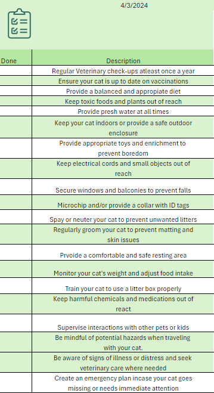

Lost Pets
"Help us, to help you!"
"Help us, to help you!"
Cats, with their curious nature and independent spirit, bring joy and companionship to countless households around the world. However, as responsible pet owners, it's crucial to recognize the various risks that cats can face in their daily lives. From household hazards to outdoor dangers, ensuring the safety of our feline friends is paramount.
In this guide, we'll delve into the essentials of cat safety, offering insights and practical tips to create a secure environment for your beloved pet. Whether you're a seasoned cat owner or considering adopting a cat for the first time, understanding the principles of cat safety is fundamental to providing a loving and protective home.
Join us as we explore the key aspects of cat safety, from indoor hazards to outdoor adventures, and discover how you can keep your furry companion safe, happy, and thriving for years to come.
Using a checklist for keeping your pet cat safe is essential for ensuring their well-being and preventing potential hazards. This checklist serves as a comprehensive guide to cover all aspects of your cat's safety, including health, environment, and daily care. By systematically checking off each item on the list, you can ensure that you're providing your cat with the necessary care, protection, and preventive measures. Additionally, having a checklist helps you stay organized and ensures that no critical aspect of your cat's safety is overlooked. Ultimately, using this checklist helps promote a safe and healthy environment for your beloved feline companion, contributing to their overall happiness and longevity.
Download the file to gain access to the document by clicking on the image
Many household items can pose risks to your cat. Keep harmful substances like cleaning agents, medications, and plants out of reach. Secure electrical cords to prevent chewing, and be cautious of small objects that could be swallowed.
2) Proper NutritionProviding a balanced diet is essential for your cat's health. Consult with your veterinarian to determine the appropriate food and portion sizes for your cat's age, weight, and activity level. Avoid feeding your cat human foods that may be toxic to them, such as chocolate, onions, and grapes.
3) Regular Veterinary CareSchedule annual check-ups with your veterinarian to monitor your cat's health and address any concerns. Keep your cat up to date on vaccinations to protect against common diseases.
4) IdentificationEnsure your cat has proper identification, such as a collar with ID tags and a microchip. This increases the chances of a safe return if your cat becomes lost.
5) Safe EnvironmentCreate a secure indoor environment for your cat by ensuring windows and balconies are screened or secured to prevent falls. Provide plenty of vertical spaces for climbing and resting, and consider enriching your cat's environment with toys, scratching posts, and hiding spots.
6) Spaying/NeuteringSpaying or neutering your cat not only helps control the pet population but also provides health benefits and reduces the risk of certain medical conditions.
7) Stress ReductionCats can be sensitive to changes in their environment. Minimize stress by providing a consistent routine, a quiet retreat area, and positive reinforcement during interactions.
8) Supervised Outdoor TimeIf you allow your cat outdoors, do so in a controlled manner. Consider harness training and supervised outings to minimize the risk of accidents, injuries, and encounters with other animals.
9) Emergancy PreparednessHave a plan in place for emergencies, including natural disasters and medical emergencies. Keep a pet first aid kit on hand and know the location of the nearest emergency veterinary clinic.
10) Educate YourselfStay informed about common cat health issues, behaviors, and safety concerns. Being knowledgeable about your cat's needs will help you provide the best possible care and ensure their safety and well-being.
By following these cat safety tips, you can create a loving and secure environment for your feline companion, promoting a happy and healthy life together. Remember, your cat relies on you for their safety and well-being, so taking proactive measures is essential for their overall happiness and longevity.